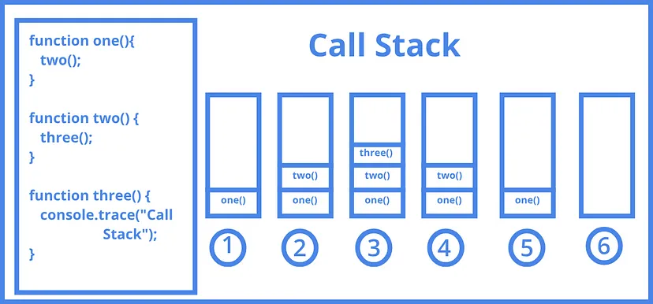

Keyboard shortcuts:
N/СпейсNext Slide
PPrevious Slide
OSlides Overview
ctrl+left clickZoom Element
If you want print version => add '
?print-pdf' at the end of slides URL (remove '#' fragment) and then print.
Like: https://wwwcourses.github.io/...CourseIntro.html?print-pdf
Fundamentals of NodeJS and NPM
Created for
Created by
Fundamentals of NodeJS and NPM
Introduction to Node.js and its Architecture
- Node.js is a JavaScript runtime built on Chrome's V8 JavaScript engine.
- It is an asynchronous (i.e. non-blocking), event-driven JavaScript runtime, mainly used, but not limited, for creating scalable and fast working network applications
- Node.js provides non-blocking I/O primitives and other libraries which are written using non-blocking paradigms, which allows the programs written on Node to run fast.
- Node.js is built against modern versions of V8. This ensures that new features from the JavaScript ECMA-262 specification are brought to Node.js developers in a timely manner, as well as continued performance and stability improvements.
- Reference: node.js.org

Understanding Asynchronous Programming in Node.js and the Event Loop
- Node.js runs on a single thread, meaning it can only execute one task at a time.
- Asynchronous programming in Node.js allows for non-blocking operations.
- This is achieved by using callbacks, promises, and async/await, enabling the application to handle other tasks while waiting for operations like file I/O or network requests to complete.
- The Event Loop is central to Node.js asynchronous processing.
How Event Loop Works
- The Event Loop is a mechanism that continuously monitors the call stack and the callback queue. When the call stack is empty, it pushes callbacks from the queue onto the stack for execution. This process allows Node.js to perform non-blocking I/O operations by deferring the execution of certain tasks until the stack is clear.
- It achieves this by using callbacks, promises, and async/await, which enable the application to handle other tasks while waiting for operations like file I/O or network requests to complete.
Call Stack
- The call stack is a data structure that keeps track of the function calls in a program. When a function is called, it's added (pushed) to the call stack. When the function finishes executing, it's removed (popped) from the stack.
- Main purpose: Keeps track of the order of function execution.
- LIFO structure: Last In First Out - the last function called is the first to finish.
- For example, if a function A calls function B, function B gets added to the call stack while A is paused. Once B finishes, it’s removed, and A resumes. 
- Live example: Call Stack Example @JavaScript Visualizer 9000
{kind=link}
Callback Queue
- The callback queue (or message queue) is a data structure where callbacks from asynchronous operations are placed once they're ready to be executed. The event loop checks the queue when the call stack is empty and moves the callback to the stack for execution.
- Main purpose: Holds functions waiting for the call stack to be clear before execution.
- FIFO structure: First In First Out - the first callback added is the first to be executed.
- For example, when a network request completes, its callback is placed in the callback queue. Once the call stack is empty, the event loop moves the callback to the call stack for execution.
- Live example: Task Queue Example @JavaScript Visualizer 9000
Reference
- Morning Keynote- Everything You Need to Know About Node.js Event Loop - Bert Belder, IBM
Example: Reading a File Asynchronously
// use the 'fs' node module
const fs = require('fs');
// File path
const filePath = 'path/to/your/file.txt';
// Reading file asynchronously
fs.readFile(filePath, 'utf8', (err, data) => {
if (err) {
console.error("Error reading the file:", err);
return;
}
console.log("File content:", data);
});
console.log("This message is displayed first.");
- The fs module provides an API for interacting with the file system
- The fs.readFile function is used to read files in a non-blocking (async) manner.
NPM and NPM CLI
NPM and NPM CLI
What is NPM?
- NPM (Node Package Manager) is the default package manager for Node.js.
- It allows developers to share and reuse code, making it easier to manage dependencies in your project.
- NPM hosts thousands of packages that you can easily integrate into your project.
- These packages can range from simple utility libraries to full frameworks.
npmconsists of a command line client, also callednpm, and an online database of public and paid-for private packages, called the npm registry.- Reference: www.npmjs.com
NPM CLI
npmCLI allows you to install external node packages (utility functions, libraries or whole frameworks) from the command line. They can be used as a standalone utilities or as a dependencies in your application.- You can install these packages either to your global node package folder or to your local project folder.
- Global node packages are accessible from everywhere and you have to install them only once to your global directory
- Local node packages are accessible only from your project folder
- Should I install a package as local or global (rule of thumb)
- Any package that you want to use in your project (i.e. your project dependencies) should be installed locally
- Any package that you want to use from the CLI should be installed globally
Initialize node project with NPM
- Before starting a project which will use node modules, you have to initialize the project - i.e. create a package.json file
- You can create automatically the package.json file using:
# make sure you are in your root project folder
# initialize a npm project (-y == defaults for package.json)
npm init -y
the package.json file
- While not strictly necessary, using a package.json is highly beneficial and recommended for managing a Node.js project efficiently.
- Dependency Management: package.json allows you to manage your project’s dependencies effectively. It lists all modules your project needs and their versions, which helps ensure consistency across different environments (development, testing, production).
- NPM Scripts: It enables the use of NPM scripts, which can automate common tasks such as testing, building, and starting your application.
- Project Metadata: It provides important metadata about your project, such as name, version, description, and entry points. This is particularly useful if you plan to distribute your project or work collaboratively.
- Version Control: It helps in handling version control of dependencies, enabling semantic versioning to manage different levels of dependency updates.
- Package Installation: When you use npm install to add a new package, NPM automatically adds the package and its version to your package.json, simplifying dependency management.
Package installation
# Install package locally
npm install <package>
# Install package globally
npm install -g <package>
- The installed package will automatically appear in a folder called node_modules and will be listed in the package.json file next to your other dependencies.
- A
package-lock.jsonwill be generated. - The package-lock.json file is an automatic file generated by npm when installing node modules. It serves several important purposes in a Node.js project:
devDependencies
- Some packages (like
live-server) are only intended to be used in the development phase of our project and not in the production phase. - These packages are known as devDependencies
- To install a devDependency append --save-dev to the command
- devDependency packages are written in
package.jsonfile in the "devDependencies:{}" section
npm install live-server --save-dev
Start node project - demo
# create project folder
mkdir myApp
# go into project folder
cd myApp
# init the project
npm init -y
# install dev packages locally
npm install <package_name> --save-dev
# install production packages locally:
npm install <package_name>
How to run scripts installed by npm?
- In order to run a script installed with npm as a global package, you just need to type the name of the executable
- If you want to start a script installed with npm as a local package, you have two ways:
- you can access the executable from
./node_modules/.bin/folder - you can use npx
npxis bundled with node, so you don't need to install it (for node>5.2.0)
# start live-server, which is installed globally
live-server ./
# start live-server, which is installed locally
./node_modules/.bin/live-server ./
# start live-server, which is installed locally
# if live-server is not found in node_modules/.bin => start live-server which is installed globally
# if not found => install the live-server package
npx live-server -v
Update package
- To update a specific local npm package simply run:
- To update a global package run:
- To update all the packages installed in your project run:
npm update <package-name>
npm update <package-name> -g
npm update
Uninstalling an npm package
- To uninstall an npm package use the following command:
npm uninstall <package-name>
Share a node project
- the
package.jsonandpackage-lock.jsonfiles enables you to share your project with other developers without sharing the node_modules folder. - Someone who will use your project can simply install all packages by using
npm installon the command line, as long as you have provided both package files. npm installscript takes all the dependencies listed in the package-lock.json file and installs them in the node_modules folder
These slides are based on
customized version of
framework